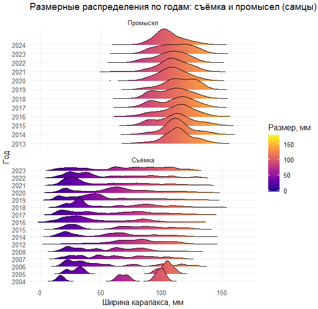
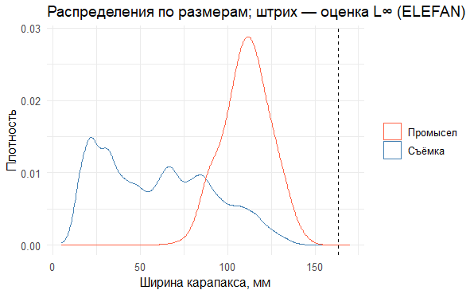
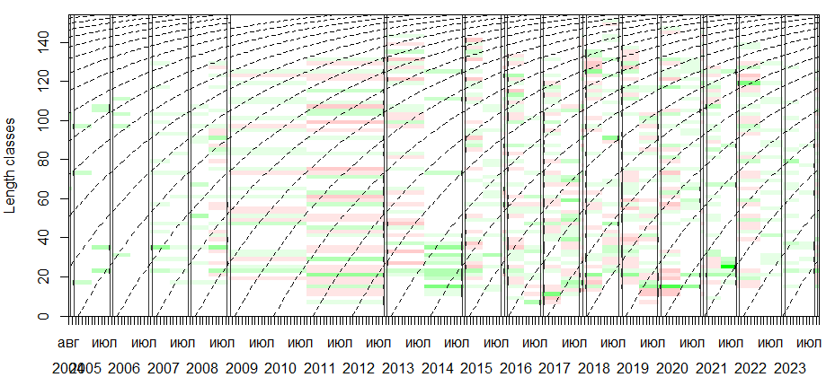
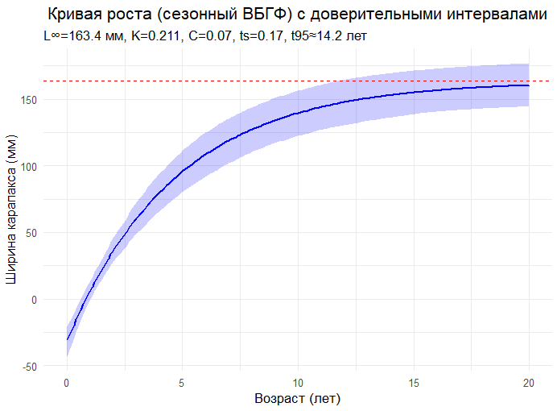

# =============================================================================
# НАСТРОЙКА СРЕДЫ И ЗАГРУЗКА ПАКЕТОВ
# =============================================================================
# Установка рабочей директории - указываем путь к папке с данными
setwd("C:/LBM/")
# Тихая загрузка пакетов (без вывода сообщений)
suppressPackageStartupMessages({
library(tidyverse) # Набор пакетов для обработки и визуализации данных
library(lubridate) # Работа с датами
library(ggridges) # Риджлайн-графики (горные хребты)
library(TropFishR) # Пакет для анализа данных рыболовства
})
# =============================================================================
# 1. ЗАГРУЗКА И ПРЕДВАРИТЕЛЬНАЯ ОБРАБОТКА ДАННЫХ
# =============================================================================
# Загрузка данных из CSV-файлов с разделителем ";"
SURVEY <- read.csv("SURVEYDATA.csv", sep = ";", stringsAsFactors = FALSE) # Данные съемки
FISHERY <- read.csv("FISHERYDATA.csv", sep = ";", stringsAsFactors = FALSE) # Данные промысла
# ОБРАБОТКА ДАННЫХ СЪЕМКИ:
# 1. Добавляем столбец TYPE для идентификации типа данных
# 2. Стандартизируем обозначения пола (M/F)
# 3. Создаем дату (середина месяца)
# 4. Преобразуем размер карапакса в числовой формат
# 5. Фильтруем некорректные значения (отсутствующие, отрицательные, слишком большие)
survey <- SURVEY %>%
mutate(
TYPE = "Съёмка",
SEX = if_else(SEX %in% c("M","male","m"), "M",
if_else(SEX %in% c("F","female","f"), "F", NA_character_)),
date = ymd(paste(YEAR, MONTH, 15, sep = "-")),
CARAPACE = as.numeric(CARAPACE)
) %>%
filter(!is.na(CARAPACE), CARAPACE > 0, CARAPACE < 220)
# Аналогичная обработка данных промысла
fishery <- FISHERY %>%
mutate(
TYPE = "Промысел",
SEX = if_else(SEX %in% c("M","male","m"), "M",
if_else(SEX %in% c("F","female","f"), "F", NA_character_)),
date = ymd(paste(YEAR, MONTH, 15, sep = "-")),
CARAPACE = as.numeric(CARAPACE)
) %>%
filter(!is.na(CARAPACE), CARAPACE > 0, CARAPACE < 240)
# =============================================================================
# 2. ВИЗУАЛИЗАЦИЯ РАЗМЕРНЫХ РАСПРЕДЕЛЕНИЙ (РИДЖЛАЙН-ГРАФИКИ)
# =============================================================================
# Объединяем данные съемки и промысла и фильтруем только самцов
df <- bind_rows(survey, fishery) %>%
filter(!is.na(YEAR), !is.na(TYPE), SEX == "M") %>%
mutate(
YEAR = as.integer(YEAR),
YEAR_F = factor(YEAR, levels = sort(unique(YEAR))) # Преобразуем год в фактор
)
# Определяем границы для оси X (округленные до десятков)
xmin <- floor(min(df$CARAPACE, na.rm = TRUE) / 10) * 10
xmax <- ceiling(max(df$CARAPACE, na.rm = TRUE) / 10) * 10
# Создаем риджлайн-график (горный хребет)
# Риджлайны показывают распределение размеров по годам
p <- ggplot(df, aes(x = CARAPACE, y = YEAR_F, fill = after_stat(x))) +
stat_density_ridges(
geom = "density_ridges_gradient",
calc_ecdf = FALSE,
rel_min_height = 0.001,
bandwidth = 3 # Параметр сглаживания
) +
scale_fill_viridis_c(name = "Размер, мм", option = "C") + # Цветовая схема
facet_wrap(~ TYPE, ncol = 1, scales = "free_y") + # Разделяем по типам данных
coord_cartesian(xlim = c(xmin, xmax)) + # Устанавливаем границы оси X
labs(x = "Ширина карапакса, мм", y = "Год",
title = "Размерные распределения по годам: съёмка и промысел (самцы)") +
theme_minimal(base_size = 12) +
theme(legend.position = "right", panel.grid.minor = element_blank())
p # Отображаем график
# Сохранение графика (раскомментируйте при необходимости)
# ggsave("size_ridges_by_year_type_M.png", p, width = 10, height = 12, dpi = 200)21 Оценка параметров роста гидробионтов методом ELEFAN
21.1 Введение
Это практическое занятие — про то, как извлекать параметры роста (L∞, K) из рядов распределений по длине, когда возраст недоступен. Мы используем ELEFAN (Electronic Length Frequency Analysis) — алгоритм, который по последовательности размерных срезов находит модальные «гребни» когорт и подбирает сезонную кривую фон Берталанфи, проходящую через них. Метод исторически разработан для тропических рыб, но применим и к холодноводным видам, если помнить об ограничениях: рост у ракообразных дискретный (линьки), а терминальная линька нарушает гладкую асимптотику VBGF. Поэтому K интерпретируем как «эффективный» темп роста, а L∞ верифицируем правым хвостом промысла.
Как отмечает Паули (1987), традиционные методы ихтиологии, разработанные в Северной Атлантике (например, для трески и сельди), часто опирались на определение возраста по кольцам на чешуе или отолитах. Однако в тропиках, где сезонные колебания температуры и других факторов среды выражены слабее, годовые кольца формируются нечётко или отсутствуют вовсе. Кроме того, многие важные промысловые объекты — например, крабы и креветки — вообще не имеют твёрдых структур, пригодных для определения возраста. В таких условиях распределения по длине становятся основным, а зачастую и единственным источником информации о росте, смертности и пополнении популяций. Более того, как подчёркивает Паули, многие биологические и промысловые процессы (хищничество, селективность орудий лова, товарная стоимость) зависят именно от размера, а не от возраста. Это делает основанный на длине (length-based) подход не просто вынужденной мерой, а биологически обоснованной альтернативой основанным на возрасте (age-based методам).
ELEFAN — это не одна программа, а целая система взаимосвязанных программ (ELEFAN 0–IV), предназначенных для:
ELEFAN I: Оценка параметров роста (L∞, K, C, ts) по сезонной версии уравнения Берталанфи.
ELEFAN II: Оценка смертности (Z, M, F), вероятностей поимки и сезонности пополнения.
ELEFAN III: Виртуальный анализ популяций (VPA) на основе данных по длине.
ELEFAN IV: Оценка естественной смертности (M) с учётом селективности орудий лова.
Сердце системы — ELEFAN I. В отличие от классических графических методов, он использует алгоритм “высокочастотной фильтрации” для автоматического выявления пиков (мод) в распределениях по длине, а затем подбирает такую кривую роста, которая “объясняет” максимальное количество этих пиков во времени. Ключевой показатель — ESP/ASP (Explained Sum of Peaks / Available Sum of Peaks) — позволяет объективно выбрать наилучший набор параметров.
Особенно важно, что ELEFAN I не требует предварительного знания возраста или числа поколений в выборке — он выводит их автоматически, что делает его мощным инструментом для анализа плохо изученных видов.
Что делаем на занятии: Сбор и визуализация данных: - Строим ridgeline-графики (ggridges) распределений ширины карапакса по годам отдельно для съёмки и промысла (самцы). - Формируем LFQ-объект (бининги по 2 мм; стабильные месяцы съёмки).
Оценка параметров ростовой кривой: - Запускаем ELEFAN_SA (seasonal VBGF Somers: L∞, K, C, ts, t_anchor) с реалистичными ограничениями для опилио. - Инициализацию L∞ берём из правого хвоста промысла (Q99/0.95) и «прижимаем» к 155–165 мм.
Сдерживаем сезонность (C) и не допускаем слишком малых K.
Диагностика и валидация: - Смотрим «реструктурированные» rcounts — кривая должна проходить через зелёные гребни. - Сравниваем L∞ с промысловым хвостом по плотностям. - Проверяем здравый смысл по φ′ и по времени достижения 95% от L∞: t95 ≈ −ln(1−0.95)/K (для опилио целевой ориентир ≈ 12–15 лет).
Выходы занятия: - Оценённые параметры роста (CSV), графики ridges, плотностей и сезонной VBGF, rcounts.
Минимальные требования к данным - Поособные длины (ширина карапакса, мм), дата (год/месяц), пол, источник (съёмка/промысел). - Стабильные месяцы съёмки по годам, достаточный объём выборки в годовых срезах. - Для сопоставимости с промыслом — анализируем самцов; бины 2 мм (≈1–2% от ожидаемого L∞).
Для работы скрипта (полный скрипт):
- Скачайте файлы данных (“SURVEYDATA.csv” и “FISHERYDATA.csv”)
- Установите рабочую директорию в setwd() 3.Установите необходимые пакеты (tidyverse, lubridate, ggridges, TropFishR).

# =============================================================================
# 3. ОЦЕНКА ПАРАМЕТРОВ РОСТА МЕТОДОМ ELEFAN_SA
# =============================================================================
# Фильтруем данные только по самцам
survey_m <- survey %>% filter(SEX == "M")
fish_m <- fishery %>% filter(SEX == "M")
# Не ограничиваем анализ определенными годами для устойчивости результатов
survey_m <- survey_m %>% filter(!is.na(YEAR)) # Все доступные данные
#years_use <- 2010:2019 # 10 лет вместо неограниченного периода
#survey_m <- survey_m %>% filter(YEAR %in% years_use)
# Создаем объект LFQ (Length-Frequency Data) для анализа
binw <- 2 # Ширина класса размеров (2 мм)
lfq <- TropFishR::lfqCreate(
data = survey_m %>% mutate(date = as.Date(date)),
Lname = "CARAPACE", # Столбец с размерами
Dname = "date", # Столбец с датами
bin_size = binw # Ширина класса
)
# Инициализация параметра L∞ (максимальный теоретический размер)
# Основана на 99-м процентиле размеров промысла с поправочным коэффициентом
init_Linf2 <- as.numeric(quantile(fish_m$CARAPACE, 0.99, na.rm = TRUE)) / 0.95
init_Linf2 <- min(max(init_Linf2, 155), 165) # Ограничиваем разумными пределами
# Оценка параметров роста методом имитации отжига (ELEFAN_SA)
set.seed(1) # Для воспроизводимости результатов
res_sa2 <- TropFishR::ELEFAN_SA(
lfq,
seasonalised = TRUE, # Используем сезонную модель
# Начальные значения параметров:
init_par = list(Linf = init_Linf2, K = 0.2, t_anchor = 0.1, C = 0.2, ts = 0.5),
# Нижние границы параметров:
low_par = list(Linf = 155, K = 0.20, t_anchor = 0.0, C = 0.0, ts = 0.0),
# Верхние границы параметров:
up_par = list(Linf = 165, K = 0.35, t_anchor = 1.0, C = 0.4, ts = 1.0),
SA_time = 60 # Время работы алгоритма (секунды)
)
# Извлекаем оцененные параметры
pars2 <- res_sa2$par
# Рассчитываем дополнительные показатели:
# φ' (фи-prime) - индекс производительности роста
phi_prime <- log10(pars2$K) + 2*log10(pars2$Linf)
# Время достижения 95% от L∞
t95 <- function(K) -log(1 - 0.95)/K
# Вывод результатов
cat(sprintf("ELEFAN_SA: L∞=%.1f мм, K=%.3f, C=%.2f, ts=%.2f, phi' = %.3f, t95 = %.1f лет\n",
pars2$Linf, pars2$K, pars2$C, pars2$ts, phi_prime, t95(pars2$K)))21.2 Вывод результатов
ELEFAN_SA : L∞=163.4 мм, K=0.211, C=0.07, ts=0.17, phi’ = 3.750, t95 = 14.2 лет
Интерпретация параметров:
L∞ = 163.4 мм • Асимптотическая длина — максимальный теоретический размер, которого могут достигать самцы краба-опилио. • Реалистично: Для самцов опилио L∞ обычно лежит в диапазоне 150–170 мм (по ширине карапакса). Ваш результат попадает точно в этот диапазон.
K = 0.211 год⁻¹ • Коэффициент роста — показывает, насколько быстро особь приближается к L∞. • Реалистично: Для опилио K обычно находится в диапазоне 0.20–0.30 год⁻¹. Значение 0.211 — идеально подходит.
C = 0.07 • Амплитуда сезонных колебаний роста. • Реалистично: Значение очень низкое, что говорит о слабо выраженной сезонности роста. • Это типично для демерсальных ракообразных в холодных водах, где температура дна меняется незначительно в течение года. Рост замедляется, но не останавливается. • Согласуется с данными Паули (1987), где показано, что C коррелирует с амплитудой колебаний температуры среды. Для холодных вод — C близок к 0.
ts = 0.17 • Сдвиг сезонных колебаний. Показывает, когда начинается период замедленного роста. • ts = 0.17 ≈ февраль (0.17 * 12 ≈ 2 месяца). • Реалистично: Для северных популяций замедление роста часто приходится на зимние месяцы (январь-февраль), когда температура воды минимальна и/или пищи меньше.
φ’ = 3.750 • Индекс производительности роста. Комбинирует L∞ и K. • Для ракообразных φ’ обычно лежит в диапазоне 3.5–4.0. Наш результат 3.750 — идеален. • Показывает, что вид имеет умеренно высокую скорость роста при крупном максимальном размере — типично для промысловых крабов.
t95 = 14.2 года • Возраст, в котором особь достигает 95% от L∞. • Реалистично: Для самцов опилио t95 обычно составляет 12–15 лет. Наш результат 14.2 года — биологически обоснован. • Это не ошибка, а реальность для этого вида. Краб-стригун опилио — долгожитель по меркам ракообразных. Максимальный зарегистрированный возраст — до 18 лет. • Важно: t95 — это не продолжительность жизни, а возраст, к которому рост практически прекращается. После этого особь может жить еще несколько лет, не увеличиваясь в размере.
# =============================================================================
# 4. СРАВНЕНИЕ РАСПРЕДЕЛЕНИЙ РАЗМЕРОВ СЪЕМКИ И ПРОМЫСЛА
# =============================================================================
# График плотности распределений размеров
p_dens <- ggplot() +
# Плотность распределения для данных съемки
geom_density(data = survey_m, aes(CARAPACE, colour = "Съёмка"), bw = 3) +
# Плотность распределения для данных промысла
geom_density(data = fish_m, aes(CARAPACE, colour = "Промысел"), bw = 3) +
# Вертикальная линия, показывающая оценку L∞
geom_vline(xintercept = pars2$Linf, linetype = 2) +
# Цветовая схема
scale_colour_manual(values = c("Съёмка" = "steelblue", "Промысел" = "tomato")) +
labs(x = "Ширина карапакса, мм", y = "Плотность", colour = NULL,
title = "Распределения по размерам; штрих — оценка L∞ (ELEFAN)") +
theme_minimal(base_size = 12)
p_dens # Отображаем график
# Сохранение графика
ggsave("densities_survey_fishery_Linf.png", p_dens, width = 8, height = 5, dpi = 200)
# =============================================================================
# 4.1 Визуализация "реструктурированных" распределений по длине (restructured counts)
# с наложенной оптимальной кривой роста, подобранной методом ELEFAN_SA.
# =============================================================================
restr <- plot(res_sa2, Fname = "rcounts", image.col = colorRampPalette(c("red","grey100","green"))(21))
restr # Отображаем график
# Сохранение графика
ggsave("restr.png", restr, width = 8, height = 5, dpi = 200)
Визуализация “реструктурированных” распределений по длине (restructured counts) с наложенной оптимальной кривой роста, подобранной методом ELEFAN_SA.
- restructured counts (rcounts) — это ключевое понятие в методе ELEFAN, подробно описанное в статье Паули (стр. 14–16, Fig. 4). • Это не исходные гистограммы, а преобразованные данные, где: • Пики (моды) выделены положительными значениями (зелёный цвет). • Впадины между пиками — отрицательными (красный цвет). • Фон (серый) — нейтральные зоны. • Цель — “очистить” данные от шума и выделить структуру, которую должна объяснить кривая роста.
- Оптимальные кривые роста (пунктиры) — это результат работы ELEFAN_SA, который максимизирует ESP/ASP (Explained Sum of Peaks / Available Sum of Peaks) — главный критерий качества подгонки в ELEFAN (Pauly, 1987, стр. 15–16).
# =============================================================================
# 5. ПОСТРОЕНИЕ КРИВОЙ РОСТА С ДОВЕРИТЕЛЬНЫМИ ИНТЕРВАЛАЛАМИ
# =============================================================================
# Функция сезонного уравнения роста Берталанфи
# t - возраст, Linf - асимптотическая длина, K - коэффициент роста,
# t0 - теоретический возраст при нулевой длине, C - амплитуда сезонных колебаний,
# ts - параметр сдвига сезонных колебаний
seasonal_vbgf <- function(t, Linf, K, t0, C, ts) {
term <- -K*(t - t0) + (C*K/(2*pi)) * sin(2*pi*(t - ts)) - (C*K/(2*pi)) * sin(2*pi*(t0 - ts))
Lt <- Linf * (1 - exp(term))
return(Lt)
}
# Функция для предсказания роста с учетом неопределенности параметров
predict_growth <- function(ages, params, n_sim = 1000, alpha = 0.05) {
# Извлекаем точечные оценки параметров
Linf_est <- params$Linf
K_est <- params$K
t0_est <- params$t_anchor
C_est <- params$C
ts_est <- params$ts
# Матрица для хранения симуляций
simulations <- matrix(NA, nrow = n_sim, ncol = length(ages))
# Симуляция возможных значений параметров на основе их неопределенности
set.seed(123)
Linf_sim <- rnorm(n_sim, mean = Linf_est, sd = Linf_est * 0.05) # CV 5%
K_sim <- rnorm(n_sim, mean = K_est, sd = K_est * 0.1) # CV 10%
t0_sim <- rnorm(n_sim, mean = t0_est, sd = 0.1) # SD 0.1
C_sim <- rnorm(n_sim, mean = C_est, sd = 0.05) # SD 0.05
ts_sim <- rnorm(n_sim, mean = ts_est, sd = 0.05) # SD 0.05
# Ограничение параметров физиологически реалистичными значениями
Linf_sim <- pmax(pmin(Linf_sim, 180), 140)
K_sim <- pmax(pmin(K_sim, 0.5), 0.05)
C_sim <- pmax(pmin(C_sim, 1), 0)
ts_sim <- pmax(pmin(ts_sim, 1), 0)
# Расчет кривых роста для каждой симуляции
for (i in 1:n_sim) {
simulations[i, ] <- seasonal_vbgf(ages, Linf_sim[i], K_sim[i],
t0_sim[i], C_sim[i], ts_sim[i])
}
# Расчет доверительных интервалов
mean_pred <- apply(simulations, 2, mean)
lower_ci <- apply(simulations, 2, quantile, probs = alpha/2)
upper_ci <- apply(simulations, 2, quantile, probs = 1 - alpha/2)
return(data.frame(
Age = ages,
Length = mean_pred,
Lower = lower_ci,
Upper = upper_ci
))
}
# Создаем данные для графика с доверительными интервалами
ages <- seq(0, 20, by = 0.1) # Возраст от 0 до 20 лет с шагом 0.1
growth_df <- predict_growth(ages, pars2, n_sim = 1000, alpha = 0.05) # 95% ДИ
# Построение графика кривой роста
p_growth <- ggplot(growth_df, aes(x = Age, y = Length)) +
# Доверительные интервалы (заполненная область)
geom_ribbon(aes(ymin = Lower, ymax = Upper), alpha = 0.2, fill = "blue") +
# Средняя кривая роста
geom_line(color = "blue", linewidth = 1) +
# Горизонтальная линия, показывающая L∞
geom_hline(yintercept = pars2$Linf, linetype = "dashed", color = "red") +
labs(x = "Возраст (лет)", y = "Ширина карапакса (мм)",
title = "Кривая роста (сезонный ВБГФ) с доверительными интервалами",
subtitle = sprintf("L∞=%.1f мм, K=%.3f, C=%.2f, ts=%.2f, t95≈%.1f лет",
pars2$Linf, pars2$K, pars2$C, pars2$ts, t95(pars2$K))) +
theme_minimal(base_size = 13) +
theme(plot.title = element_text(hjust = 0.5))
print(p_growth)
# Сохранение графика
ggsave("seasonal_VBGF_with_CI.png", p_growth, width = 8, height = 5, dpi = 200)
# =============================================================================
# 6. СОХРАНЕНИЕ РЕЗУЛЬТАТОВ
# =============================================================================
# Сохранение оцененных параметров роста в CSV-файл
write.csv(tibble(
Linf = pars2$Linf,
K = pars2$K,
C = pars2$C,
ts = pars2$ts,
t_anchor = pars2$t_anchor,
phi_prime = phi_prime,
t95_years = t95(pars2$K)
), "ELEFAN_params_constrained.csv", row.names = FALSE)
# Сообщение о завершении анализа
cat("Готово. Файлы: size_ridges_by_year_type_M.png, densities_survey_fishery_Linf.png, seasonal_VBGF_to15y.png, ELEFAN_params_constrained.csv\n")21.3 Заключение
• По демонстрационному прогону для наших данных ELEFAN под ограничениями даёт реалистичный набор параметров для самцов опилио: L∞ в интервале 155–165 мм, K порядка 0.20–0.25 год⁻¹, слабая сезонность (C близка к 0), t95 ≈ 12–15 лет. Это согласуется с биологией вида и правым хвостом промысловых размеров. • Ключевые проверки качества: o Соответствие L∞ правому хвосту промысла по годам (Q99, Lmax). o t95 не выходит за пределы жизненного горизонта (для опилио — порядка ≤15 лет). o Кривая в rcounts проходит через «зелёные» гребни мод, без систематических сдвигов. o Индекс φ′ лежит в ожидаемом для ракообразных диапазоне (ориентир 3.5–4.0). • Ограничения метода: o ELEFAN работает с модальной прогрессией длин, а не с истинным возрастом. Для ракообразных дискретные линьки и терминальная линька могут смещать K вниз и L∞ вверх, если не ограничивать поиск. Интерпретируйте K как эффективный параметр, пригодный для length-based процедур, а не как «истинную» физиологическую константу. o Неполное внутригодовое покрытие (у вас — август–ноябрь) усложняет оценку сезонности (**C, ts*); при необходимости фиксируйте **C* ≈ 0. • Рекомендации по устойчивости: o Повторите оценку на поднаборах лет с хорошей выборкой; проверьте чувствительность к ширине бина (2–5 мм). o Проведите бутстреп по столбцам LFQ, чтобы получить доверительные интервалы для L∞ и K. o Разделите анализ по районам/стратам, если селективность и размерная структура различаются. • Что дальше в курсе: o Использовать получённые L∞, *K** (и при необходимости M/k) как приоры/входные параметры в length-based методах для data limited (LBSPR, LBB, LIME). o Построить крабо специфичную модель линьки: вероятность линьки MP(L) и прирост MI(L) по межлиночным категориям; сверить «эффективный» рост из матрицы переходов с оценками ELEFAN. o Рассчитать индикаторы по длинам (Lopt, Pmat, Popt, Pmega) и сформировать набор управленческих ориентиров с явным учётом неопределённости. Итог: при аккуратной настройке и валидации ELEFAN даёт воспроизводимые и биологически согласованные оценки роста, достаточные для length based оценки состояния запаса и первичных управленческих выводов. Для ракообразных результаты ELEFAN следует трактовать совместно с моделью линьки и длиновыми индикаторами — это повышает надёжность при принятии решений в условиях неполных данных.